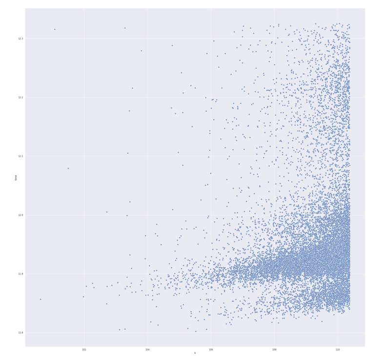

IAIK-JCE is a provider for the Java Cryptography Extension that,
according to the vendor, "supplements the security functionality
of the default JDK". It is a commercial product developed by Stiftung Secure Information
and Communication Technologies, a spin-off of the Institute for
Applied Information Processing and Communication” (IAIK) of the
University of Graz. The company is kind enough to offer a full,
free evaluation version for any non-commercial use.
By observing the behavior of the latest version (5.60 as of today), one can get
a glimpse of how the major cryptographic algorithms are implemented. This
process led me to the discovery of a subtle vulnerability in the
implementation of the DSA algorithm: the way that some of the computations
involved in the signature generation are carried out introduces a side
channel that leaks timing information from the observation of which an
attacker could potentially recover the private key.
The same kind of issue affected
other popular JCE providers, for instance CVE-2016-5548,
CVE-2016-1000341,
CVE-2019-3739,
and it's related to the fact that a flawed implementation typically
relies on non-constant-time modular exponentiation to compute parts of
the signature. Let's quickly review how signatures are generated in
the general setting of the DSA algorithm. Let
be the reduced residue system modulo a prime
whose length is usually chosen among
1024, 2048, 3072, 4096. This set forms a cyclic group of cardinality
under
multiplication. A consequence of Lagrange's
theorem is that we can construct
a cyclic subgroup of
with cardinality equal to a smaller prime by
choosing so that
divides . Since
the order of any element of
must divide
, by choosing a random
we obtain a primitive element that generates
the whole subgroup of order by
.
This makes the subgroup closed under multiplication
modulo and, by consequence, under
exponentiation, so that any power of
still belongs to the subgroup. We will call
the public key whereas a randomly chosen
is the private key.
Given a message , a signature is the couple
, generated as follows:
Where
is randomly chosen and H denotes a hash
function whose digest length matches the length of
. The modular exponentiation of big
integers is usually implemented by means of a technique named exponentiation
by squaring, which exploits the binary representation of
the exponent to perform fast computations compared to the trivial
iterated-multiplication. The observable running time is therefore
a function dependent on either the length or the binary
representation of the exponent. As it turns out,
this is enough to introduce a time correlation between the exponent
and the computation of the result, and an attacker who carefully
observes the time taken to generate the signatures could extract
partial information about the exponent . This
partial information could be used to recover the whole exponent
and therefore the private key , as there
exist techniques to reconstruct an
integer of a prime field like
knowing only a few bits of it. This kind of side channels is usually
thwarted in software implementations with the help of a technique named blinding,
where a further random integer is multiplied with the exponent
before the exponentiation. Another mitigation option is
the Montgomery's ladder.
Enough of an introduction. Let's see how the IAIK JCE provider implements the
DSA algorithm. RawDSA.class has the symbol names stripped so
we have to understand which dummy symbol maps to the right DSA parameter.
This is easily accomplished by gathering the following lines from across
the code:
protected void engineInitVerify(PublicKey paramPublicKey) throws InvalidKeyException {
...
this.b = dSAPublicKey.getY();
...
protected void engineInitSign(PrivateKey paramPrivateKey) throws InvalidKeyException {
...
this.a = dSAPrivateKey.getX();
...
private void a(DSAParams paramDSAParams) {
this.c = paramDSAParams.getP();
this.d = paramDSAParams.getQ();
this.e = paramDSAParams.getG();
}
We are then able to identify all the parameters:
public final class RawDSA extends SignatureSpi {
private BigInteger a; // <--- x, private key
private BigInteger b; // <--- y = g^x, public key
private BigInteger c; // <--- p
private BigInteger d; // <--- q
private BigInteger e; // <--- g
...
Let's now focus on the signature generation.
public BigInteger[] dsaSignRS() {
byte[] arrayOfByte = this.dataBuffer_.toByteArray();
if (this.i != null)
this.i.a(this.a, arrayOfByte);
while (true) {
① BigInteger bigInteger1 = a();
② BigInteger bigInteger2 = a(bigInteger1);
if (bigInteger2.equals(NumberTheory.ZERO))
continue;
BigInteger bigInteger3 = a(bigInteger1, bigInteger2, arrayOfByte);
if (!bigInteger3.equals(NumberTheory.ZERO))
return new BigInteger[] { bigInteger2, bigInteger3 };
}
}
The two bigInteger of interest are all returned by a method
`a` having three different signatures. The first takes no formal parameters:
① private BigInteger a() {
BigInteger bigInteger;
if (this.i != null) {
bigInteger = this.i.a();
} else {
BigInteger bigInteger1;
if (this.g == null) {
if (this.f == null)
this.f = SecRandom.getDefault();
int i = this.d.bitLength() + 64;
bigInteger1 = new BigInteger(i, this.f);
} else {
bigInteger1 = new BigInteger(1, this.g);
bigInteger1 = bigInteger1.subtract(NumberTheory.ONE);
}
bigInteger = bigInteger1.mod(this.d.subtract(NumberTheory.ONE)).add(NumberTheory.ONE);
}
return bigInteger;
}
The code above combines
the two algorithms that generate the unique
ephemeral number , as described in the NIST
FIPS 186-4 document, appendices B.2.1 and B.2.2, according
to which a obtained
from the RBG is then returned as: .
Let's find out what line ② does. The method returns a
BigInteger and takes the ephemeral as argument;
this is indeed the method that calculates :
② private BigInteger a(BigInteger paramBigInteger) {
BigInteger bigInteger = this.e.modPow(paramBigInteger, this.c);
return bigInteger.mod(this.d);
}
This is where the modular exponentiation is performed. The code uses Java
BigInteger's modPow,
whose underlying algorithm uses a
variant of the Sliding-window method, itself a form of
exponentiation-by-squaring: the exponent is
decomposed into two parts that are then discriminated
according to whether they are even or odd. The former
part leads to a completely different set of operations
than the latter, introducing then the dependency
on the input. This is what makes the IAIK DSA implementation
vulnerable to the timing attack.
We want to verify our claim with the help of a proof of concept: if
it's true that the code is vulnerable, a certain correlation between
either or the ephemeral generated at ①,
and the time taken to compute the signature must
arise. We therefore generate a large number of signatures and measure the
time taken by each signature, and record it along with the value of
each signature's and . The
code for the PoC is available here.
An entropy daemon like Haveged
is recommended or, at the very least, java.security.egd must
point to /dev/urandom, since most Java implementations
use /dev/random by default and the code could therefore
block, waiting for more entropy to be harvested.
The output from the program looks like:
time;r;k
3040211;304545110037792108352155616342187874653439775526;792415407494206255999175588330041765090379724621
1759846;994456083602324492753775613997634890006734890312;1147064693348440745986375215220663950617549464466
1567922;1100375385524368117595997104661333932876798141866;526303025493376784355601406592090222158889264898
...
We test our hypothesis of a dependency between the time and any of
or by calculating the Spearman's
correlation coefficient between the three variables in the dataset.
This choice is justified by the fact that we make no assumption on the
linearity of the correlation, the only hypothesis being that, intuitively,
the time must be monotonically related with one of the two variables,
since larger exponents would imply longer times for the exponentiation.
The correlation coefficients that I obtained for a dataset of 100000 signatures are:
time r k
time 1.000000 -0.005567 0.226051
r -0.005567 1.000000 -0.006712
k 0.226051 -0.006712 1.000000
The variable shows no correlation
with the time, as the coefficient is practically zero,
while, unsurpinsingly, the variable
shows a positive correlation coefficient of 0.226,
confirming the monotonical relation with the values of the
time. This can be also seen from the scatter plot with
the time variable on the vertical axis, and
on the horizontal:

One might argue over the small value of the correlation
coefficient. We provide an experimental counter argument
to convince ourselves of the quality of the test.
We generate similar datasets with the exactly the same
code of the PoC against two different Java JCE providers:
BouncyCastle version 1.54 and 1.64, respectively.
BouncyCastle versions earlier than 1.56 are all affected
by a similar vulnerability. We compute the Spearman's
coefficient for each dataset produced by timing the
signatures generated with each version. The values
obtained for version 1.64, which is "immune" due
to blinding, are:
time r k
time 1.000000 0.001817 0.002297
r 0.001817 1.000000 -0.008206
k 0.002297 -0.008206 1.000000
Indeed, the blinding technique eliminates
any sort of monotonical correlation between
and the time. Let's compare that to the coefficients
obtained for version 1.54, vulnerable as per CVE-2016-1000341:
time r k
time 1.000000 -0.005543 0.204165
r -0.005543 1.000000 -0.006380
k 0.204165 -0.006380 1.000000
We clearly see the coefficient of the correlation between
and the time to be roughly the same value as the one
we obtained for the IAIK JCE provider. This completes
the discussion by adding more evidence to our former claim regarding
the vulnerability, and a reasonably good confidence on the effectiveness of our
testing technique.